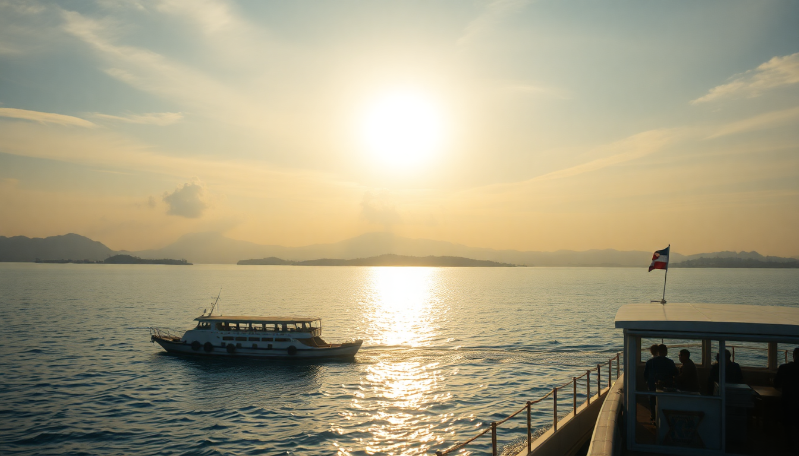

Getting Around the Maldives: Ferries, Seaplanes & Speedboats

I landed in Malé and immediately realized the hardest part of a Maldives trip isn’t the price tag—it’s figuring out how to get from A to B. The country is 99% water, and your resort is likely on a speck of sand an hour or more from the airport. After three trips piecing together ferries, seaplanes, and speedboats across Malé, Baa Atoll, and Ari Atoll, here’s exactly what to expect.
What’s the difference between public ferries, speedboats, and seaplanes?
Public ferries are the budget lifeline. They run between Malé and the local islands (Maafushi, Dhiffushi, Thulusdhoo) on fixed schedules. A ferry from Malé to Maafushi costs about $3–$5 and takes 1.5 hours. No AC, no frills, but you’ll ride with locals and get the real vibe.
Speedboats are the middle ground. Private transfers from Malé to resorts in North Malé Atoll run $50–$150 per person one-way. They’re fast (30–45 minutes), bumpy if the sea is rough, and most resorts require you to book through them. I took a speedboat from Malé to Baa Atoll once—it took 2.5 hours and I regretted not flying.
Seaplanes are for long hops. They land on water, seat 10–15 people, and cost $300–$600 per person round-trip. Only resorts in far atolls (Baa, Ari, Laamu) use them. The views are incredible, but they’re loud, hot on the tarmac, and only fly during daylight hours (6 AM–4 PM).
How do I get from Malé International Airport to Malé City?
You don’t need a seaplane for this. The airport is on Hulhulé Island, connected to Malé City by a 10-minute ferry (every 15 minutes, $1) or a 15-minute taxi over the Sinamalé Bridge (about $10–$15). If you’re staying in Malé for a night before a resort transfer, skip the taxi—the ferry drops you right at the main jetty near the fish market.
For Hulhumalé (the artificial island with cheaper hotels), take a public bus (Route 101) from the airport bus stop. It costs $0.50, runs every 20 minutes, and takes 20 minutes to reach Hulhumalé Central Park.
What’s the best way to reach Baa Atoll resorts?
Baa Atoll is a UNESCO Biosphere Reserve—home to Hanifaru Bay and manta ray cleaning stations. Most resorts here (like Amilla Fushi or Soneva Fushi) require a seaplane from Malé. The flight takes 30–40 minutes and costs around $500 round-trip. Book through the resort; they coordinate the timing with your arrival.
If you’re staying on a local island like Dharavandhoo (the atoll’s main inhabited island), you can take a public ferry from Malé to Dharavandhoo. It runs twice a week (Monday and Thursday), costs $60, and takes 7 hours. I did this once—it’s an adventure, not a convenience. Better to fly.
For the budget route: take the public ferry from Malé to Kudarikilu (6 hours, $55), then a local speedboat to your guesthouse. Kudarikilu has a small jetty and a few cheap stays.
How do I get to Ari Atoll without breaking the bank?
Ari Atoll is huge—split into North and South. Resorts like Ellaidhoo Maldives by Cinnamon (North Ari) and Constance Moofushi (South Ari) use seaplanes (25–35 minutes, $400–$600 round-trip). South Ari is famous for whale sharks, so most guests fly.
For local island hopping, use the public ferry network. From Malé, a ferry to Ukulhas (North Ari) runs three times a week and costs $40. It takes 4 hours. From Ukulhas, you can catch a local speedboat to Mathiveri (15 minutes, $10 per person) or Dhigurah (30 minutes, $15). I stayed in Dhigurah for three nights and used the local speedboat to visit a sandbank—cheaper than any resort excursion.
If you’re on a strict budget, the Atoll Transfer ferry (operated by MTCC) connects Malé to multiple Ari Atoll islands. Schedules change monthly, so check the MTCC website or ask at the Malé ferry terminal.
Can I use public ferries to island-hop between atolls?
Yes, but it’s slow. The MTCC public ferry network covers most inhabited islands. A ferry from Malé to Thulusdhoo (Kaafu Atoll) costs $5 and takes 1 hour. From Thulusdhoo, you can connect to Baa Atoll via a weekly ferry (Wednesday only, $30, 3 hours).
For hopping between Baa and Ari, there’s no direct public ferry. You’ll need to return to Malé first, then take another ferry out. This wastes a full day. I’d recommend booking a multi-day speedboat charter (around $300–$500 for a group of four) if you want to cover both atolls in a week.
What should I know about booking transfers in advance?
Book everything ahead during peak season (November–April). Seaplanes and speedboats fill up fast. Resorts usually handle bookings once you confirm a stay, but for local island guesthouses, you’ll need to arrange transfers yourself.
- Seaplane tip: Request an early morning flight. Afternoon flights get delayed by weather, and you might miss your connection.
- Speedboat tip: If you’re prone to seasickness, take a Dramamine 30 minutes before. The Indian Ocean gets choppy.
- Ferry tip: Bring cash (Maldivian Rufiyaa or USD). Ferries don’t take cards. The ferry terminal in Malé has an ATM, but it sometimes runs out of cash.
I once booked a speedboat from Malé to Maafushi through my guesthouse. They quoted $25 per person, but the actual boat was a cargo ferry with no seats. Always ask for the boat type and capacity before paying.
FAQ
Is it cheaper to book a seaplane directly or through the resort? Always book through the resort. Resorts negotiate bulk rates with seaplane operators (Trans Maldivian Airways or Maldivian Air Taxi). Direct booking costs the same or more, and you risk schedule mismatches. The resort coordinates your flight with your check-in time.
Can I use public ferries to reach a resort instead of a seaplane? Only if the resort is on a local island (like Maafushi or Ukulhas). Most private resorts (one resort per island) don’t have public ferry service. You’ll need a speedboat or seaplane. A few resorts in South Malé Atoll offer shared speedboat transfers for $80–$100 per person.
What happens if my seaplane is canceled due to weather? The resort will put you up for the night (usually at their own expense) and rebook for the next morning. Seaplanes don’t fly in rain or low clouds. I got stuck in Malé for an extra night when my flight to Baa Atoll was canceled—the resort covered my hotel at Hulhumalé’s Ocean Grand Hotel. Always pack a change of clothes in your carry-on.
Conclusion
- Public ferries are the cheapest option for local islands, but they’re slow and run limited schedules. Use them only if you have flexible time.
- Speedboats work best for resorts in Malé and South Malé Atoll. Expect to pay $50–$150 per person one-way.
- Seaplanes are essential for Baa Atoll and Ari Atoll resorts. Budget $400–$600 round-trip and book through your resort.
- Island-hopping between atolls requires returning to Malé or chartering a private speedboat. Plan your route before you arrive.
- Always confirm transfer details with your guesthouse or resort 48 hours before arrival. Cash is king for public ferries and local speedboats.